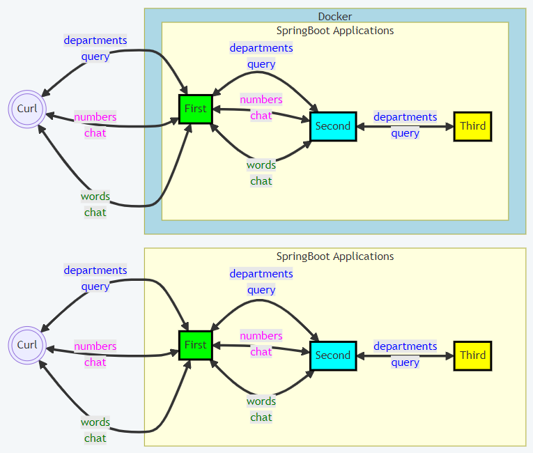

Project sections:
Java source code packages:

 project 'Study26-first', application sources :
kp
project 'Study26-first', application sources :
kp
project 'Study26-first', test sources :
kp
project 'Study26-second', application sources :
kp
project 'Study26-second', test sources :
kp
project 'Study26-third', application sources :
kp
project 'Study26-third', test sources :
kp

 project 'Study26-first' :
Java API Documentation ●
Java Test API Documentation
project 'Study26-first' :
Java API Documentation ●
Java Test API Documentation
project 'Study26-second' :
Java API Documentation ●
Java Test API Documentation
project 'Study26-third' :
Java API Documentation ●
Java Test API Documentation
 1.1. The protocol buffers proto definitions.
1.1. The protocol buffers proto definitions.
| chat.proto |
| department.proto |


1.2. QWERTY
Action:

Use the batch file
"01 Docker compose.bat" to build the images and start the containers.
2.1. Docker images are built using the following files:
2.2. The screenshot
shows the created Docker containers.
Action:
1. Start the Windows batch script
"02 CURL local 'departments'.bat".
2. Start the Windows batch script
"03 CURL local 'chat'.bat".
3.1. Testing the "company" application.
The screenshot shows the results of running "call_graphql_endpoint_company.sh".
Back to the top of the pageAction:
1. Use the batch file
"04 MVN build and start local.bat" to build and
start locally the 'first', 'second', and 'third'.
2. Start the Windows batch script
"05 CURL local 'departments'.bat".
3. Start the Windows batch script
"06 CURL local 'chat'.bat".
| AAAAAA | AbstractAAAAAAAAAAAAAAA |
{kind=link}
{kind=link}